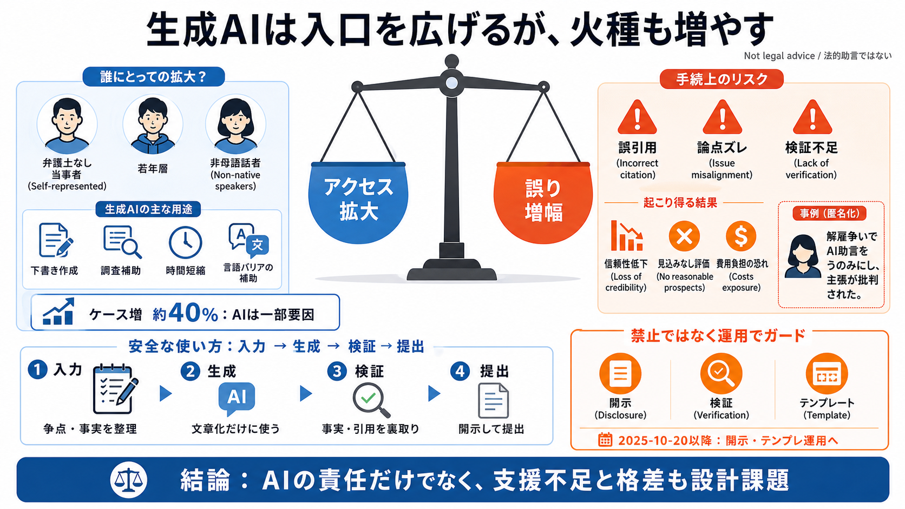

Fair Work Commission condemns 'plain wrong' AI legal advice as cases with AI litigants surge - ABC News
Among that category is Gregory Baker, a computer science lecturer from Macquarie University who this month became the fi…

入口は増え、火種も増える
オーストラリアの公正労働委員会（Fair Work Commission）で、生成AIが「司法へのアクセス」を広げうる一方、誤情報による不利益も増やし得る。
主張作成の負担
弁護士なしで手続を進める当事者（self-represented）は、法律文書の作成や調査にコストがかかるため、生成AIを補助として使う傾向がある。
AIが原因？全部ではない
ABC報道の調査では、2023-24から2024-25にかけてケースが約40%増えた背景にAI利用が「一定割合」で関与したとされるが、因果は部分的。
置き換えではなく、増幅
生成AIは「正しい法的助言（legal advice）」の代替ではないため、検証しない提出は、実質的見込みのなさや費用負担につながり得る。
元ALDI従業員の例
解雇に異議を申し立てた元ALDI従業員のケースで、AIの助言に基づく主張が「実質的に見込みのないもの」と批判され、法的費用負担が命じられたと報じられている。
AIは全部NG？違う
委員会側は、AI利用自体が直ちに問題とは限らず、「複数の道具の1つとして批判的に使う」なら有効になりうるという立場を示した。
開示・検証・テンプレ
委員会はAIを禁止するより、開示（disclosure）と検証（verification）を軸に、テンプレート運用でリスクを下げる方向だと報じられている。
いつから変わる？
報道では、2025年10月20日以降、AI利用の開示やテンプレートを使う運用が導入されるとされている。
アクセスは「格差」も映す
調査では、AI利用が若年層・自己申立てで多く、使用者の多くがChatGPTを使い、無料版を頼る割合が高いとされる。
誰でも同じ品質ではない
非母語話者は母語話者より約2倍近くAIを使う傾向が示され、支払能力や言語バリアが「入力の質」と「検証の余力」を左右し得る。
「増える」＝「検証が増える」
開示義務は直ちに自動の有罪・不利を意味しないが、開示後は事実・引用の検証がより強く求められ、実質的な責任が増える可能性がある。
良い導入の型
記事の問題意識を踏まえると、AIは「入力→生成→検証→提出」を分けて運用するほど安全になりやすい。
結論：両面の現実
生成AIは門戸を広げ得るが、誤情報・論点ズレ・無料モデルの質ばらつき・手続リテラシー不足が重なると、不利益が増える。
参照（要点抽出）
本デッキは、ユーザー提示の要約（ABC報道・委員会の方針・調査結果・元ALDI従業員の事例）をもとに、情報を圧縮したものです。
Among that category is Gregory Baker, a computer science lecturer from Macquarie University who this month became the fi…
Gregory Baker, a computing academic at Macquarie University, represented himself in a dispute before Australia's **Fair …
Skip to content The Conversation Disiplin ilmiah, gaya jurnalistik gremlin/Getty # An ‘AI legal team’ has won its f…
“Part of me just did it for the lulz – it’s pretty funny running a case with ChatGPT and seeing what happens,” he said. …
Fair Work Commission ruled he was entitled to a permanent part-time position. Baker reveals that his success was due to …